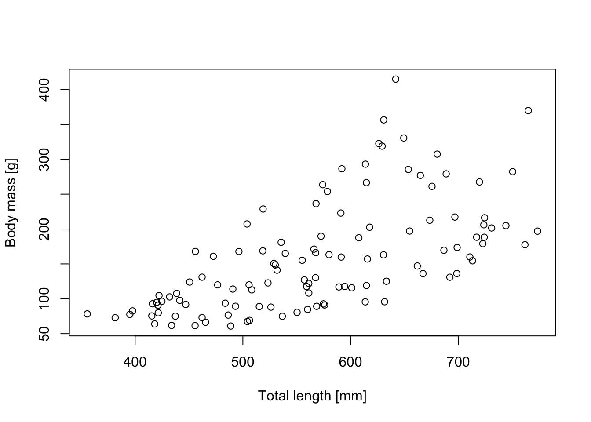

To introduce the typical options in a linear model, we use an example that was originally prepared by Jörn Pagel. In the example, we want to analyze predictors of Body mass in the snake Vipera aspis.
Dat =read.table("https://raw.githubusercontent.com/florianhartig/LearningBayes/master/data/Aspis_data.txt", stringsAsFactors = T)# Inspect relationship between body mass and total body lenghtplot(Dat$TL, Dat$BM,xlab ='Total length [mm]',ylab ='Body mass [g]')

# For the analysis we use log-transformed body masses# and log-transformed and scaled total body lenght (TL)plot(Dat$log_TL.sc, Dat$log_BM)
6.1.1 LM with continous predictor
Linear regression with lm()
LM <-lm(log_BM ~ log_TL.sc, data = Dat)summary(LM)
Call:
lm(formula = log_BM ~ log_TL.sc, data = Dat)
Residuals:
Min 1Q Median 3Q Max
-0.60635 -0.28199 0.01219 0.21303 0.83099
Coefficients:
Estimate Std. Error t value Pr(>|t|)
(Intercept) 4.95347 0.03219 153.89 <2e-16 ***
log_TL.sc 0.32626 0.03233 10.09 <2e-16 ***
---
Signif. codes: 0 '***' 0.001 '**' 0.01 '*' 0.05 '.' 0.1 ' ' 1
Residual standard error: 0.3452 on 113 degrees of freedom
Multiple R-squared: 0.474, Adjusted R-squared: 0.4694
F-statistic: 101.8 on 1 and 113 DF, p-value: < 2.2e-16
Analysis in JAGS
library(rjags)
Loading required package: coda
Linked to JAGS 4.3.0
Loaded modules: basemod,bugs
# 1) Save a description of the model in JAGS syntax # to the working directorymodel ="model{ # Likelihood for(i in 1:n.dat){ y[i] ~ dnorm(mu[i],tau) mu[i] <- alpha + beta.TL * TL[i] } # Prior distributions alpha ~ dnorm(0,0.001) beta.TL ~ dnorm(0,0.001) tau <- 1/(sigma*sigma) sigma ~ dunif(0,100) }"# 2) Set up a list that contains all the necessary dataData =list(y = Dat$log_BM, TL = Dat$log_TL.sc,n.dat =nrow(Dat))# 3) Specify a function to generate inital values for the parametersinits.fn <-function() list(alpha =rnorm(1), beta.TL =rnorm(1),sigma =runif(1,1,100))# Compile the model and run the MCMC for an adaptation (burn-in) phasejagsModel <-jags.model(file =textConnection(model), data=Data, init = inits.fn, n.chains =3, n.adapt=5000)
Compiling model graph
Resolving undeclared variables
Allocating nodes
Graph information:
Observed stochastic nodes: 115
Unobserved stochastic nodes: 3
Total graph size: 470
Initializing model
# Specify parameters for which posterior samples are savedpara.names <-c("alpha","beta.TL","sigma")# Continue the MCMC runs with samplingSamples <-coda.samples(jagsModel, variable.names = para.names, n.iter =5000)# Statistical summaries of the (marginal) posterior # distribution for each parametersummary(Samples)
Iterations = 5001:10000
Thinning interval = 1
Number of chains = 3
Sample size per chain = 5000
1. Empirical mean and standard deviation for each variable,
plus standard error of the mean:
Mean SD Naive SE Time-series SE
alpha 4.9540 0.03249 0.0002653 0.0002631
beta.TL 0.3264 0.03259 0.0002661 0.0002639
sigma 0.3488 0.02341 0.0001911 0.0002515
2. Quantiles for each variable:
2.5% 25% 50% 75% 97.5%
alpha 4.8911 4.9324 4.9535 4.9758 5.0176
beta.TL 0.2623 0.3046 0.3263 0.3480 0.3903
sigma 0.3071 0.3325 0.3475 0.3635 0.3989
# If we were interested only in point estimates,# we could extract posterior meansPostMeans <-summary(Samples)$statistics[,'Mean']# Graphical overview of the samples from the MCMC chainsplot(Samples)
Compare this to the lm() results
plot(Dat$log_TL.sc, Dat$log_BM)coef(LM)
(Intercept) log_TL.sc
4.9534727 0.3262571
# and the two regression linesabline(LM, col ='red')abline(PostMeans[1:2], col ='blue')
6.1.2 LM with categorical predictor
Inspect relationship between body mass and total body lenght but now seperately for the two sexes
point.symbols <-c(f =1, m =4)plot(Dat$TL, Dat$BM,pch = point.symbols[Dat$Sex],xlab ='Total length [mm]',ylab ='Body mass [g]')
# For the analysis we use log-transformed body masses# and log-transformed and scaled total body lenght (TL)plot(Dat$log_TL.sc, Dat$log_BM, pch = point.symbols[Dat$Sex])
Linear regression with lm()
LM <-lm(log_BM ~ log_TL.sc + Sex, data = Dat)summary(LM)
Call:
lm(formula = log_BM ~ log_TL.sc + Sex, data = Dat)
Residuals:
Min 1Q Median 3Q Max
-0.41822 -0.18030 -0.02969 0.16075 0.50885
Coefficients:
Estimate Std. Error t value Pr(>|t|)
(Intercept) 5.27831 0.03127 168.81 <2e-16 ***
log_TL.sc 0.44765 0.02197 20.38 <2e-16 ***
Sexm -0.59296 0.04394 -13.49 <2e-16 ***
---
Signif. codes: 0 '***' 0.001 '**' 0.01 '*' 0.05 '.' 0.1 ' ' 1
Residual standard error: 0.214 on 112 degrees of freedom
Multiple R-squared: 0.7997, Adjusted R-squared: 0.7961
F-statistic: 223.6 on 2 and 112 DF, p-value: < 2.2e-16
Analysis in JAGS
model ="model{ # Likelihood for(i in 1:n.dat){ y[i] ~ dnorm(mu[i],tau) mu[i] <- alpha + beta.TL * TL[i] + beta.m * Sexm[i] } # Prior distributions alpha ~ dnorm(0,0.001) beta.TL ~ dnorm(0,0.001) beta.m ~ dnorm(0,0.001) tau <- 1/(sigma*sigma) sigma ~ dunif(0,100) } "# 2) Set up a list that contains all the necessary dataData =list(y = Dat$log_BM, TL = Dat$log_TL.sc,Sexm =ifelse(Dat$Sex =='m', 1, 0),n.dat =nrow(Dat))# 3) Specify a function to generate inital values for the parametersinits.fn <-function() list(alpha =rnorm(1), beta.TL =rnorm(1),beta.m =rnorm(1),sigma =runif(1,1,100))# Compile the model and run the MCMC for an adaptation (burn-in) phasejagsModel <-jags.model(file =textConnection(model), data=Data, init = inits.fn, n.chains =3, n.adapt=5000)
Compiling model graph
Resolving undeclared variables
Allocating nodes
Graph information:
Observed stochastic nodes: 115
Unobserved stochastic nodes: 4
Total graph size: 588
Initializing model
# Specify parameters for which posterior samples are savedpara.names <-c("alpha","beta.TL","beta.m","sigma")# Continue the MCMC runs with samplingSamples <-coda.samples(jagsModel, variable.names = para.names, n.iter =5000)# Statistical summaries of the (marginal) posterior distribution# for each parametersummary(Samples)
Iterations = 5001:10000
Thinning interval = 1
Number of chains = 3
Sample size per chain = 5000
1. Empirical mean and standard deviation for each variable,
plus standard error of the mean:
Mean SD Naive SE Time-series SE
alpha 5.2788 0.03169 0.0002588 0.0005261
beta.TL 0.4477 0.02214 0.0001808 0.0002535
beta.m -0.5936 0.04484 0.0003661 0.0007556
sigma 0.2161 0.01458 0.0001191 0.0001544
2. Quantiles for each variable:
2.5% 25% 50% 75% 97.5%
alpha 5.2159 5.2576 5.2786 5.2997 5.3420
beta.TL 0.4039 0.4329 0.4476 0.4625 0.4909
beta.m -0.6819 -0.6234 -0.5936 -0.5636 -0.5062
sigma 0.1900 0.2060 0.2152 0.2255 0.2469
From the previous plot, it´s obvious that we could also consider an interaction between sex and body mass
Linear regression with lm()
LM <-lm(log_BM ~ log_TL.sc + Sex + Sex:log_TL.sc, data = Dat)summary(LM)
Call:
lm(formula = log_BM ~ log_TL.sc + Sex + Sex:log_TL.sc, data = Dat)
Residuals:
Min 1Q Median 3Q Max
-0.40757 -0.16446 -0.01407 0.14330 0.51672
Coefficients:
Estimate Std. Error t value Pr(>|t|)
(Intercept) 5.29416 0.03247 163.059 <2e-16 ***
log_TL.sc 0.48297 0.03049 15.841 <2e-16 ***
Sexm -0.59513 0.04362 -13.642 <2e-16 ***
log_TL.sc:Sexm -0.07225 0.04361 -1.657 0.1
---
Signif. codes: 0 '***' 0.001 '**' 0.01 '*' 0.05 '.' 0.1 ' ' 1
Residual standard error: 0.2123 on 111 degrees of freedom
Multiple R-squared: 0.8045, Adjusted R-squared: 0.7992
F-statistic: 152.3 on 3 and 111 DF, p-value: < 2.2e-16
Analysis in JAGS
model ="model{ # Likelihood for(i in 1:n.dat){ y[i] ~ dnorm(mu[i],tau) mu[i] <- alpha + beta.TL[Sex[i]] * TL[i] + beta.m * Sexm[i] } # Prior distributions alpha ~ dnorm(0,0.001) for(s in 1:2){ beta.TL[s] ~ dnorm(0,0.001) } beta.m ~ dnorm(0,0.001) tau <- 1/(sigma*sigma) sigma ~ dunif(0,100) } "# 2) Set up a list that contains all the necessary dataData =list(y = Dat$log_BM, TL = Dat$log_TL.sc,Sexm =ifelse(Dat$Sex =='m', 1, 0),Sex =as.numeric(Dat$Sex),n.dat =nrow(Dat))# 3) Specify a function to generate inital values for the parametersinits.fn <-function() list(alpha =rnorm(1), beta.TL =rnorm(2),beta.m =rnorm(1),sigma =runif(1,1,100))# Compile the model and run the MCMC for an adaptation (burn-in) phasejagsModel <-jags.model(file =textConnection(model), data=Data, init = inits.fn, n.chains =3, n.adapt=5000)
Compiling model graph
Resolving undeclared variables
Allocating nodes
Graph information:
Observed stochastic nodes: 115
Unobserved stochastic nodes: 5
Total graph size: 704
Initializing model
# Specify parameters for which posterior samples are savedpara.names <-c("alpha","beta.TL","beta.m","sigma")# Continue the MCMC runs with samplingSamples <-coda.samples(jagsModel, variable.names = para.names, n.iter =5000)# Statistical summaries of the (marginal) posterior distribution# for each parametersummary(Samples)
Iterations = 5001:10000
Thinning interval = 1
Number of chains = 3
Sample size per chain = 5000
1. Empirical mean and standard deviation for each variable,
plus standard error of the mean:
Mean SD Naive SE Time-series SE
alpha 5.2935 0.03335 0.0002723 0.0005830
beta.TL[1] 0.4828 0.03131 0.0002557 0.0003602
beta.TL[2] 0.4103 0.03182 0.0002598 0.0002949
beta.m -0.5939 0.04478 0.0003656 0.0007691
sigma 0.2150 0.01484 0.0001212 0.0001661
2. Quantiles for each variable:
2.5% 25% 50% 75% 97.5%
alpha 5.2280 5.2711 5.2935 5.3159 5.3597
beta.TL[1] 0.4224 0.4617 0.4827 0.5038 0.5442
beta.TL[2] 0.3484 0.3892 0.4103 0.4316 0.4723
beta.m -0.6820 -0.6236 -0.5935 -0.5640 -0.5065
sigma 0.1889 0.2046 0.2142 0.2243 0.2467
##################################################################### Linear regression with lm()library(lme4)
Loading required package: Matrix
LME <-lmer(log_BM ~ log_TL.sc + Sex + Sex:log_TL.sc+ (1|Pop), data = Dat)summary(LME)
Linear mixed model fit by REML ['lmerMod']
Formula: log_BM ~ log_TL.sc + Sex + Sex:log_TL.sc + (1 | Pop)
Data: Dat
REML criterion at convergence: -135.6
Scaled residuals:
Min 1Q Median 3Q Max
-2.62996 -0.80341 -0.05736 0.71521 2.79946
Random effects:
Groups Name Variance Std.Dev.
Pop (Intercept) 0.03569 0.1889
Residual 0.01152 0.1073
Number of obs: 115, groups: Pop, 9
Fixed effects:
Estimate Std. Error t value
(Intercept) 5.30770 0.06515 81.468
log_TL.sc 0.50259 0.01676 29.996
Sexm -0.59752 0.02243 -26.643
log_TL.sc:Sexm -0.04369 0.02291 -1.907
Correlation of Fixed Effects:
(Intr) lg_TL. Sexm
log_TL.sc 0.102
Sexm -0.191 -0.297
lg_TL.sc:Sx -0.071 -0.656 0.016
############################################################## Analysis in JAGS ##############################################################model ="model{ # Likelihood for(i in 1:n.dat){ y[i] ~ dnorm(mu[i],tau) mu[i] <- alpha[Pop[i]] + beta.TL[Sex[i]] * TL[i] + beta.m * Sexm[i] } # Prior distributions for(p in 1:n.pop){ alpha[p] ~ dnorm(mu.alpha, tau.pop) } for(s in 1:2){ beta.TL[s] ~ dnorm(0,0.001) } mu.alpha ~ dnorm(0,0.001) beta.m ~ dnorm(0,0.001) tau <- 1/(sigma*sigma) sigma ~ dunif(0,100) tau.pop <- 1/(sigma.pop*sigma.pop) sigma.pop ~ dunif(0,100) } "# 2) Set up a list that contains all the necessary dataData =list(y = Dat$log_BM, TL = Dat$log_TL.sc,Sexm =ifelse(Dat$Sex =='m', 1, 0),Sex =as.numeric(Dat$Sex),n.dat =nrow(Dat),Pop = Dat$Pop,n.pop =max(Dat$Pop))# 3) Specify a function to generate inital values for the parametersinits.fn <-function() list(mu.alpha =rnorm(1), beta.TL =rnorm(2),beta.m =rnorm(1),sigma =runif(1,1,100),sigma.pop =runif(1,1,100))# Compile the model and run the MCMC for an adaptation (burn-in) phasejagsModel <-jags.model(file =textConnection(model), data=Data, init = inits.fn, n.chains =3, n.adapt=5000)
Compiling model graph
Resolving undeclared variables
Allocating nodes
Graph information:
Observed stochastic nodes: 115
Unobserved stochastic nodes: 15
Total graph size: 832
Initializing model
# Specify parameters for which posterior samples are savedpara.names <-c("mu.alpha","beta.TL","beta.m","sigma","sigma.pop")# Continue the MCMC runs with samplingSamples <-coda.samples(jagsModel, variable.names = para.names, n.iter =5000)# Statistical summaries of the (marginal) posterior distribution# for each parametersummary(Samples)
Iterations = 5001:10000
Thinning interval = 1
Number of chains = 3
Sample size per chain = 5000
1. Empirical mean and standard deviation for each variable,
plus standard error of the mean:
Mean SD Naive SE Time-series SE
beta.TL[1] 0.5025 0.016997 1.388e-04 2.113e-04
beta.TL[2] 0.4590 0.017746 1.449e-04 2.019e-04
beta.m -0.5972 0.022725 1.856e-04 3.916e-04
mu.alpha 5.3084 0.081224 6.632e-04 7.005e-04
sigma 0.1086 0.007631 6.231e-05 8.844e-05
sigma.pop 0.2271 0.074730 6.102e-04 1.267e-03
2. Quantiles for each variable:
2.5% 25% 50% 75% 97.5%
beta.TL[1] 0.46891 0.4913 0.5025 0.5137 0.5362
beta.TL[2] 0.42393 0.4470 0.4589 0.4707 0.4944
beta.m -0.64217 -0.6126 -0.5972 -0.5819 -0.5526
mu.alpha 5.14783 5.2595 5.3079 5.3574 5.4725
sigma 0.09471 0.1033 0.1081 0.1134 0.1250
sigma.pop 0.13140 0.1770 0.2110 0.2596 0.4158
# Compare this to the lmer() resultssummary(LME)
Linear mixed model fit by REML ['lmerMod']
Formula: log_BM ~ log_TL.sc + Sex + Sex:log_TL.sc + (1 | Pop)
Data: Dat
REML criterion at convergence: -135.6
Scaled residuals:
Min 1Q Median 3Q Max
-2.62996 -0.80341 -0.05736 0.71521 2.79946
Random effects:
Groups Name Variance Std.Dev.
Pop (Intercept) 0.03569 0.1889
Residual 0.01152 0.1073
Number of obs: 115, groups: Pop, 9
Fixed effects:
Estimate Std. Error t value
(Intercept) 5.30770 0.06515 81.468
log_TL.sc 0.50259 0.01676 29.996
Sexm -0.59752 0.02243 -26.643
log_TL.sc:Sexm -0.04369 0.02291 -1.907
Correlation of Fixed Effects:
(Intr) lg_TL. Sexm
log_TL.sc 0.102
Sexm -0.191 -0.297
lg_TL.sc:Sx -0.071 -0.656 0.016
# Graphical overview of the samples from the MCMC chainsplot(Samples)